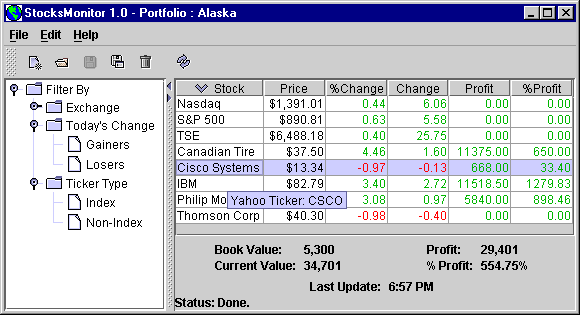

Sort table rows
To render table cells
as desired, first ensure that the table model
implements getColumnClass.
This will ensure Swing selects the most appropriate default renderer for
each column.
If the default renderer is inadequate, then an implementation of TableCellRenderer
(which has only one method - getTableCellRendererComponent) must
be defined, in one of two ways:
DefaultTableCellRenderer
and override some methods - usually setValue or getTableCellRendererComponent
(suitable when rendering is similar to JLabel)getTableCellRendererComponent (suitable when
rendering is not similar to JLabel)getTableCellRendererComponent:
TableColumn.setCellRenderer():
myTable.getColumnModel().getColumn(idx).setCellRenderer(new MyRenderer());Example 1
The default action of setValue is to place the result of toString
into a cell. This value may not be appropriate.
Here, Stock.toString would place unwanted data in the cell.
The setValue method is overridden to customize both the text placed
in a cell, and its associated tooltip:
package hirondelle.stocks.table; import javax.swing.table.*; import hirondelle.stocks.quotes.Stock; import hirondelle.stocks.util.Util; /** * Display a {@link Stock} in a table cell by placing the * full name in the cell, and by providing its Yahoo ticker * (including suffix for the {@link hirondelle.stocks.quotes.Exchange}) as tooltip. */ final class RenderStockName extends DefaultTableCellRenderer { @Override public void setValue(Object aValue) { Object result = aValue; if ((aValue != null) && (aValue instanceof Stock)) { Stock stock = (Stock) aValue; result = stock.getName(); setTooltip(stock); } super.setValue(result); } private void setTooltip(Stock aStock) { StringBuilder tooltip = new StringBuilder("Yahoo Ticker: "); tooltip.append(aStock.getTicker()); String suffix = aStock.getExchange().getTickerSuffix(); if (Util.textHasContent(suffix)) { tooltip.append("."); tooltip.append(suffix); } setToolTipText(tooltip.toString()); } }
Use the current locale to render a Number as a currency:
package hirondelle.stocks.table; import javax.swing.table.*; import javax.swing.*; import java.text.NumberFormat; /** * Display a <tt>Number</tt> in a table cell in the format defined by * {@link NumberFormat#getCurrencyInstance()}, and aligned to the right. */ final class RenderPrice extends DefaultTableCellRenderer { RenderPrice() { setHorizontalAlignment(SwingConstants.RIGHT); } @Override public void setValue(Object aValue) { Object result = aValue; if ((aValue != null) && (aValue instanceof Number)) { Number numberValue = (Number)aValue; NumberFormat formatter = NumberFormat.getCurrencyInstance(); result = formatter.format(numberValue.doubleValue()); } super.setValue(result); } }
Render as red or green, according to the sign of a Number.
The implementation overrides getTableCellRendererComponent instead
of setValue, and returns a this reference.
package hirondelle.stocks.table; import javax.swing.table.*; import javax.swing.*; import java.awt.*; /** * Display a <tt>Number</tt> in a table cell as either red (for negative values) * or green (for non-negative values), and aligned on the right. * * <P>Note that this class will work with any <tt>Number</tt> - * <tt>Double</tt>, <tt>BigDecimal</tt>, etc. */ final class RenderRedGreen extends DefaultTableCellRenderer { RenderRedGreen () { setHorizontalAlignment(SwingConstants.RIGHT); } @Override public Component getTableCellRendererComponent( JTable aTable, Object aNumberValue, boolean aIsSelected, boolean aHasFocus, int aRow, int aColumn ) { /* * Implementation Note : * It is important that no 'new' objects be present in this * implementation (excluding exceptions): * if the table is large, then a large number of objects would be * created during rendering. */ if (aNumberValue == null) return this; Component renderer = super.getTableCellRendererComponent( aTable, aNumberValue, aIsSelected, aHasFocus, aRow, aColumn ); Number value = (Number)aNumberValue; if (value.doubleValue() < 0) { renderer.setForeground(Color.red); } else { renderer.setForeground(fDarkGreen); } return this; } // PRIVATE //the default green is too bright and illegible private Color fDarkGreen = Color.green.darker(); }
Here's an illustration of all three example renderers:
